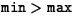

| Up: | gltools - an OpenGL based on-line graphics toolbox |
| Next: | gleps - Encapsulated Postscript Dump |
| Prev: | glrnd - Rendering Volume Management |
glmesh contains rendering routines for triangular and tetrahedreal meshes based on callback functions invoking loops over simplices of a mesh in a data structure given by the user. No extra data structure has to be generated. Sure, this causes performance drawbacks, but instead the user gains great flexibility in using this interface on his/her data strucutures.
glmesh manages plane sections and level sets for 3D tetrahedral meshes.
The basic principle is a double callback mechanism - a loop callback function gets user data and a simplex callback function as parameter which has to be fed with number, node numbers and coordinates of a simplex.
#ifndef GLMESH_H
#define GLMESH_H
#include "glrnd.h"
typedef struct glMeshStruct *glMesh;
This structure contains all necessary mesh data and is hidden from the user.
subsection:Constructors and Destructors
typedef void (*glmSimplexCallback)
(
glMesh m,
int number_of_this_simplex,
int material_of_this_simplex,
double *function_defined_on_this_this_simplex,
int *index_in_funtion_on_this_simplex,
double **coordinates_of_the_nodes
);
typedef void (*glmLoopCallback)
(
glMesh m,
void *user_data,
glmSimplexCallback call_this_on_every_simplex
);
glMesh glmCreate(
int number_of_mesh_nodes,
int number_of_mesh_simplices,
int space_dimension,
void *user_data,
glmLoopCallback loop_over_all_simplices
);
Generate an instance of glMesh. This is cheap.
void glmDestroy(
glMesh m
);
Destroy an instance of glMesh.
void glmSetFunction(
glMesh m,
double *f,
double min,
double max
);
Set piecewise linear function to plot, its minimum and its maximum. If , they are automatically calculated.
double *glmGetNodeFunc(glMesh m);
void *glmGetUserData(glMesh m);
void glmSetCellFlux(glMesh m, double *values, double min, double max);
Set piecewise constant flux to plot
void glmSetVoffset(
glMesh m,
int voffset
);
Set vector offset (0 or 1)
typedef float* (*glmColorCallback)
(
glMesh m,
double fval,
float *rgb
);
void glmSetColorCallback(
glMesh m,
glmColorCallback col
);
Set color calculation function. glmRBColor is the default value.
typedef float* (*glmMaterialColorCallback)
(
glMesh m,
int imat,
float *rgb
);
void glmSetMaterialColorCallback(
glMesh m,
glmMaterialColorCallback col
);
Set material color calculation function. glmDefaultMaterialColor is the default value.
void glmDrawInfo(glRenderer rnd, glMesh m);
Info call back for mesh data.
void glmDraw(
glRenderer rnd,
glMesh m
);
The glmesh draw routines are invoked using glmDraw as a callback for glRender.
#endif
| Up: | gltools - an OpenGL based on-line graphics toolbox |
| Next: | gleps - Encapsulated Postscript Dump |
| Prev: | glrnd - Rendering Volume Management |
© pdelib team 5/21/2001. This page has been generated using the LaTeX typesetting system and latex2html.